기억에 남는 여행지
 |
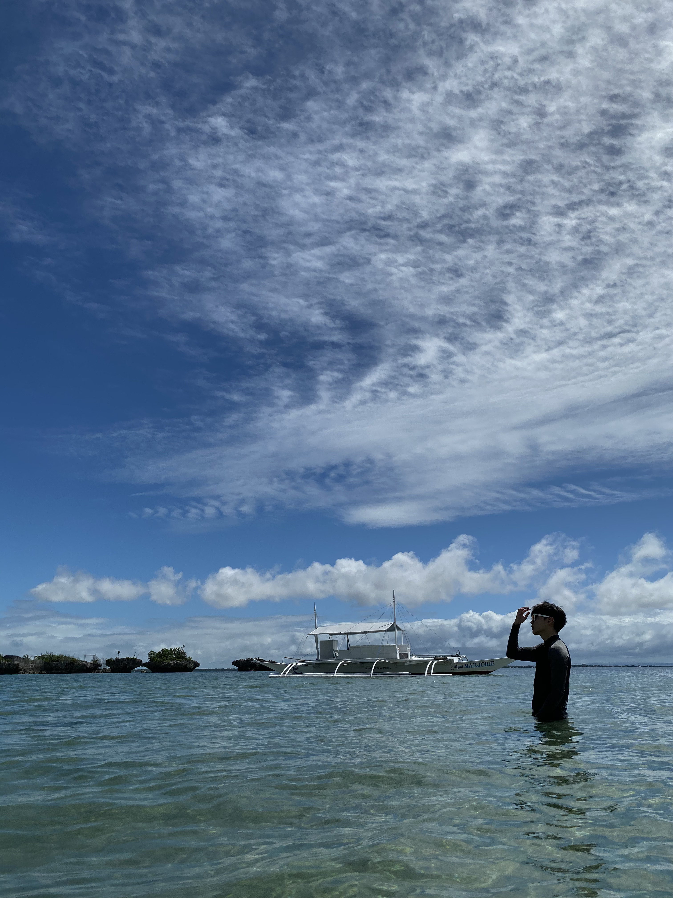 | 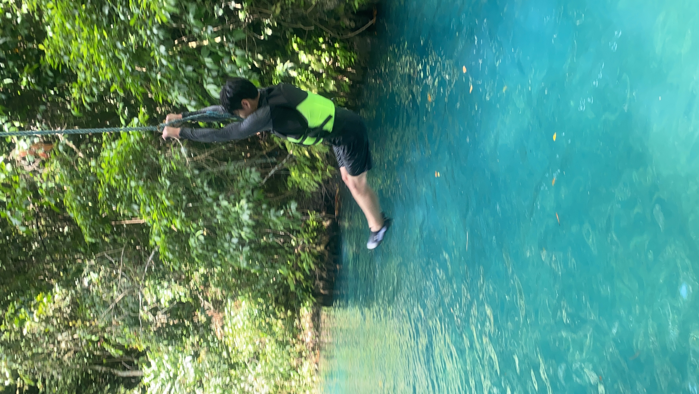 |
| 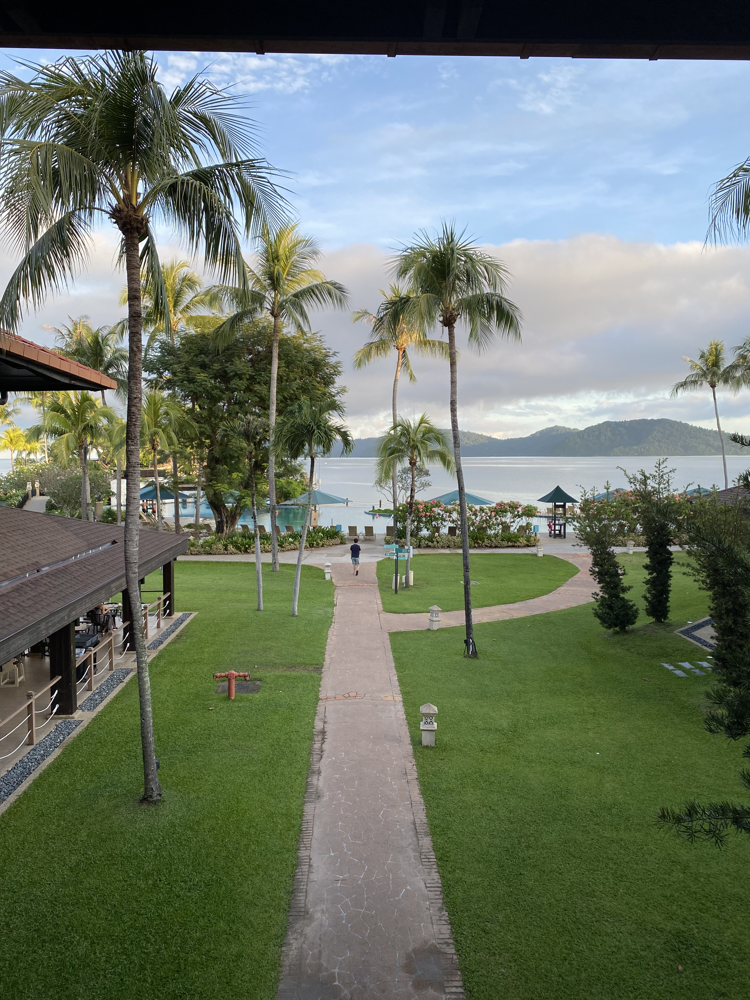 | 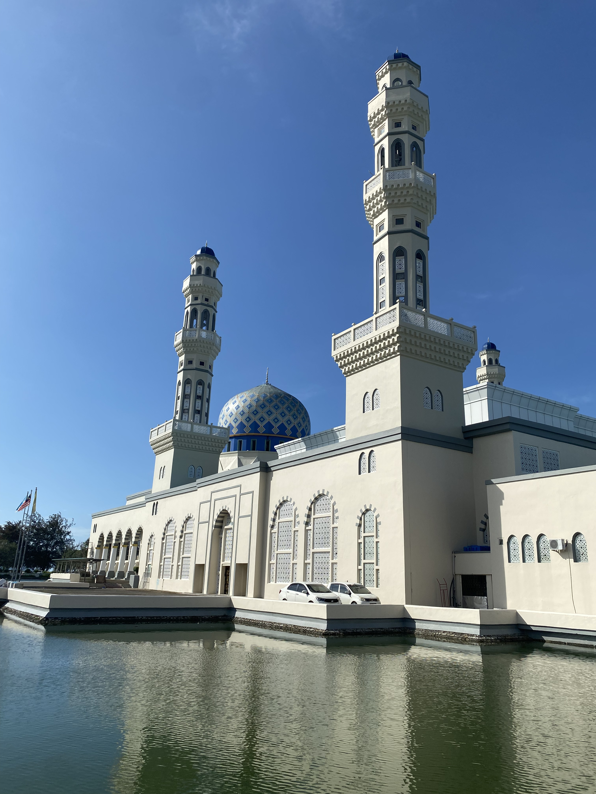 | 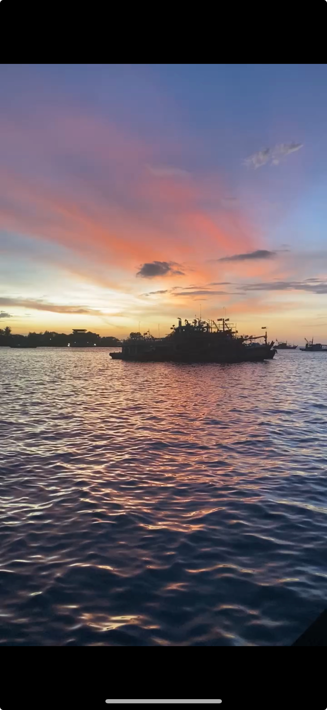 |
| 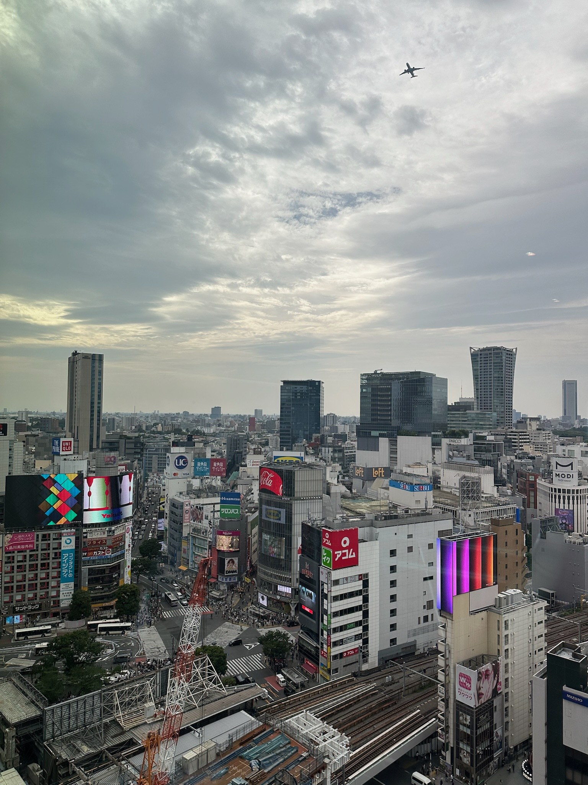 | 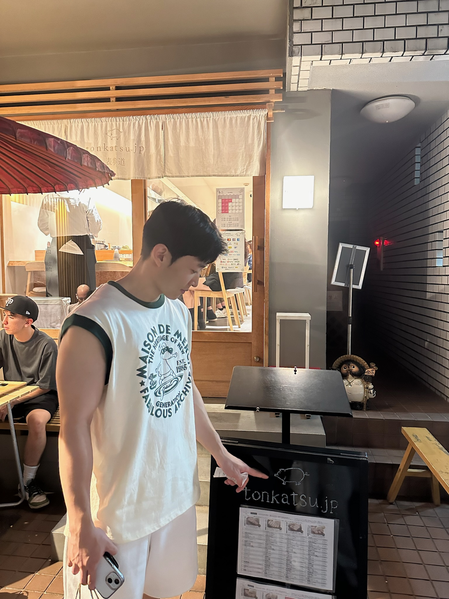 |  |
안녕하세요, 저는 끊임없이 학습하고 성장하기를 좋아하는 포포에요. 현재 위치에서 멈추지 않고 계속해서 성장하기 위해 노력하고 있어요. 매일 스스로와의 약속을 하고 그 약속을 지키면서 성취감을 느끼고, 그 결과 자신감과 재미를 느끼며 살아가고 싶고, 그렇게 하려고 노력하고 있어요. 주변 사람들과도 이 소소한 행복을 나누고 싶네요.
|
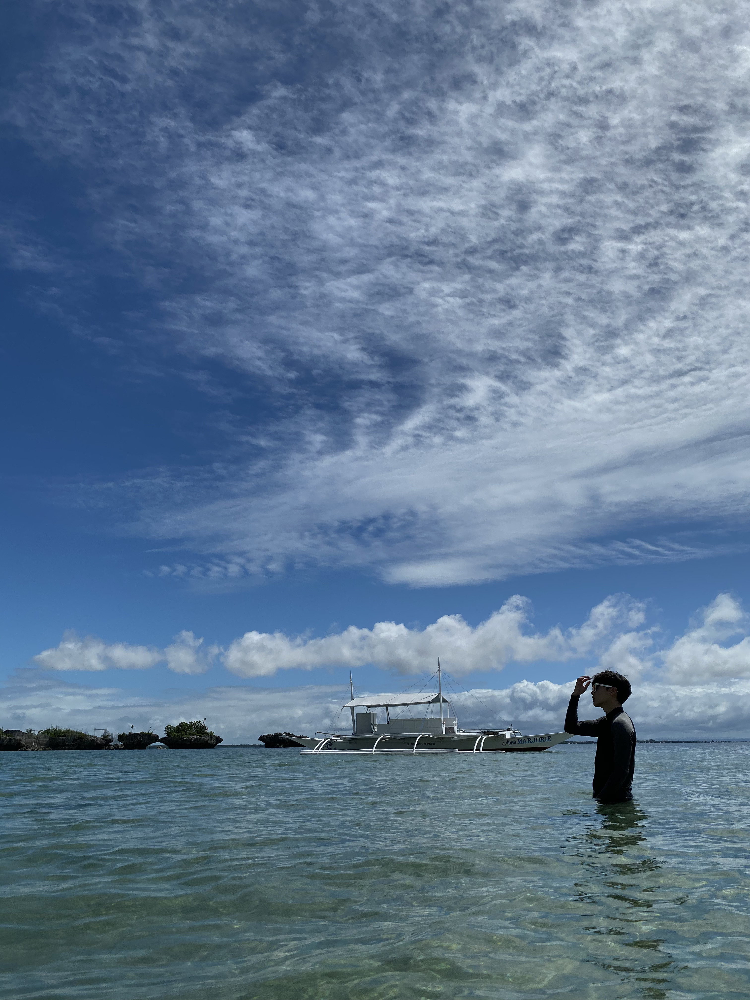 | 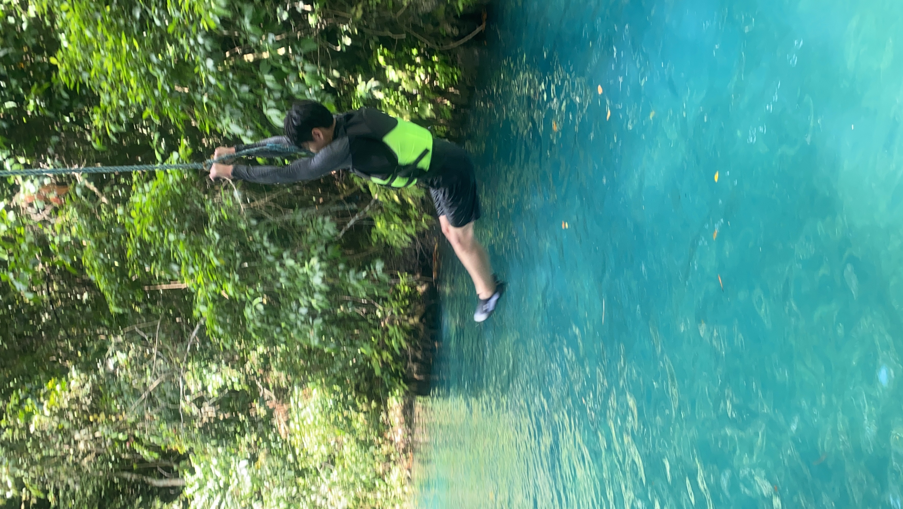 |
| 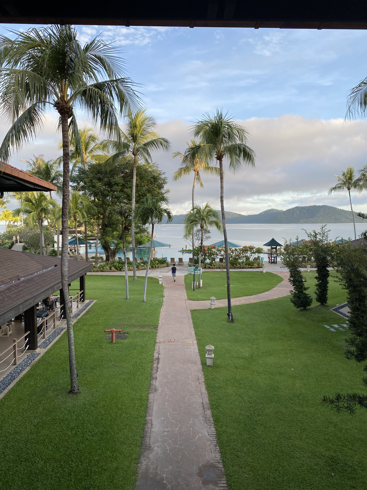 | 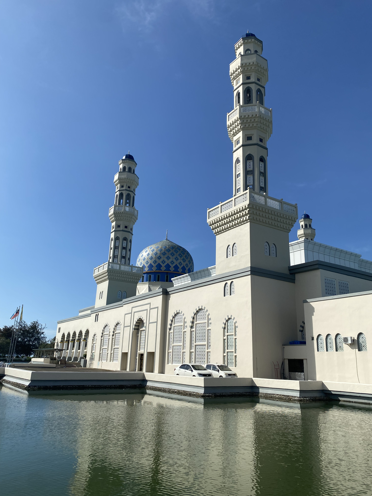 | 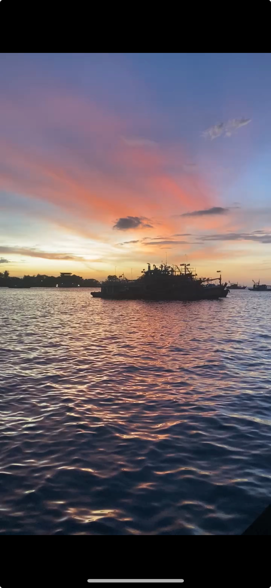 |
| 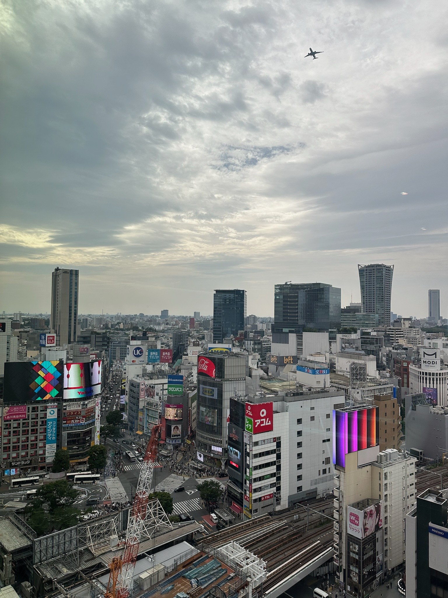 | 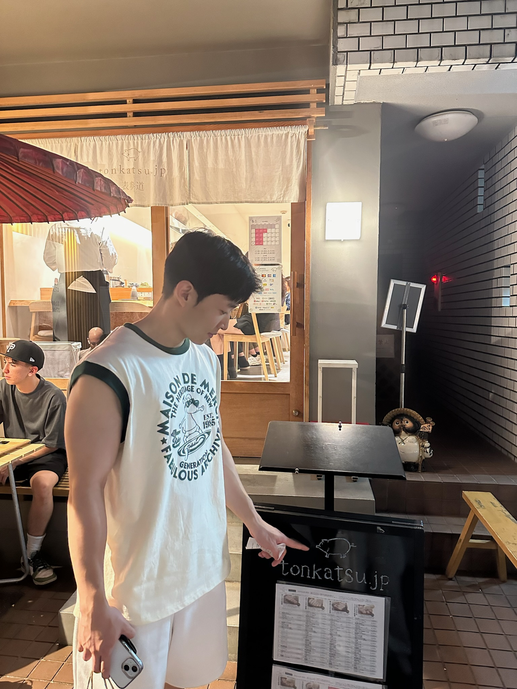 | |
크리스토퍼 놀란 감독이 연출하고 매튜 매커너히가 주연으로 출연하는 영화 「인터스텔라」는 점점 황폐해져가는 지구를 대체할 인류의 터전을 찾기 위해 새롭게 발견된 웜홀을 통해 항성 간(Interstellar) 우주여행을 떠나는 탐험가들의 모험이 연대기 순으로 그린 작품이다.
학창시절 이 영화를 처음 봤을 때 신비로운 우주의 매력에 매료되었다. 인류의 미래라는 막대한 책임을 등에 지고 먼 우주로 나아가는 등장인물들이 멋있었다.
특히, 최선의 선택을 위해 듣기만 해도 어려운 시간, 거리, 자원을 계산하여 근거를 가지고 판단하는 모습이 내 마음을 사로잡았다.
우린 답을 찾을것이다. 늘 그랬듯이. 라는 포스터의 문장처럼, 나도 새로운 도전을 할 때마다
이 문장으로 자신감을 가지곤 한다. 나도 이렇게 전문가다운 모습을 가지고싶다고 생각하게 만들어 준 영화였다.

Lost Stars는 마룬 5의 보컬리스트이자 배우인 애덤 리바인의 노래로, 본래 뮤지컬 로맨틱 코메디 영화 《비긴 어게인》의 배경음악이다. 비긴 어게인을 보면서 영화관에서 Lost Stars를 들었을 때 감성에 젖었다.
길 잃은 별들이라는 의미의 제목과 가사를 통해 노래는 한 때의 찬란한 젊음은 빛을 발하며 소멸됩니다. 마치 목적 없이 존재하는 별처럼 이라는 의미를 전달한다. 영화관에서의 피부로 느껴지는 웅장한 오디오와 멜로디, 그리고 노래가 전달하고자 하는 메세지는 그 자체로 내게 동기를 부여해주었다. 그래서 들을 때마다 신기하게 위로가 되면서 동기부여가 되는 인생 노래이다.